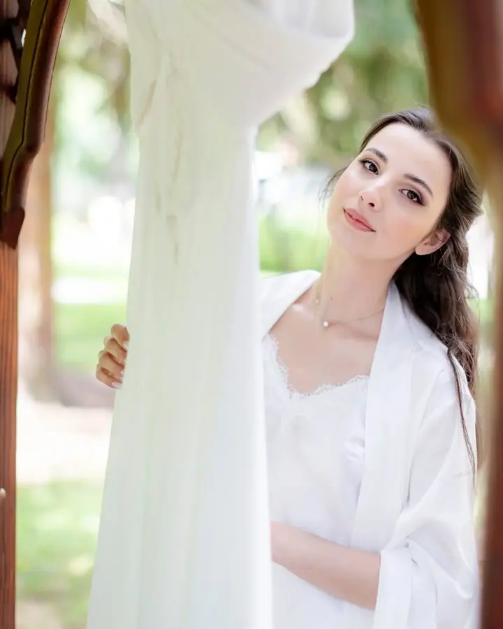
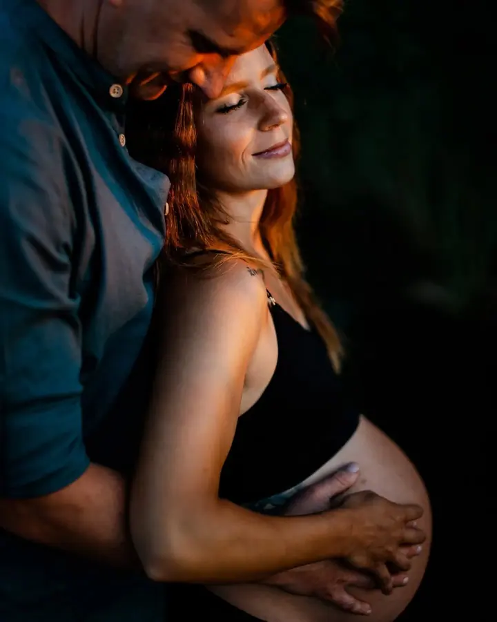
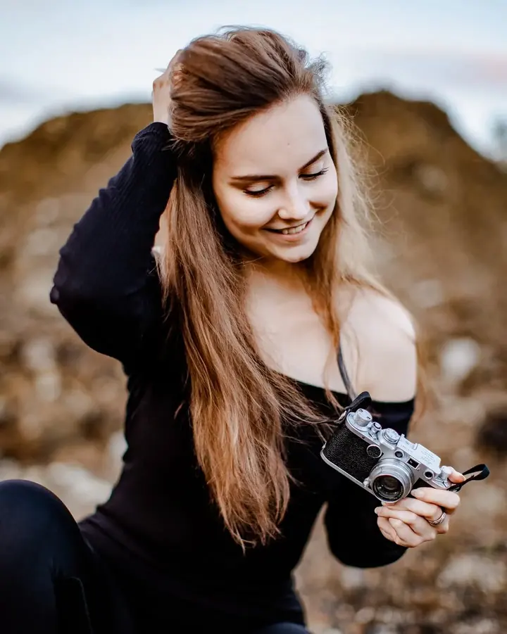

jedna
Svatby
Svatba je moje hlavní specializace. Jsem s vámi od příprav přes obřad až po večerní oslavu a fotím s láskou a úctou k vašemu dni.

Svatební a rodinný fotograf · Prievidza, Slovensko

Jmenuji se Damian Macho a jsem svatební a rodinný fotograf z Prievidze. Fotím svatby, páry na rande i rodiny venku v přírodě. Fotografie je pro mě práce i koníček, a proto ji dělám s láskou.
Více o mně
Co fotím
jedna
Svatba je moje hlavní specializace. Jsem s vámi od příprav přes obřad až po večerní oslavu a fotím s láskou a úctou k vašemu dni.
dvě
Společné focení pro páry, klidně v horách nebo v přírodě, kde se cítíte dobře. Hodí se jako předsvatební focení nebo jen tak pro radost.
tři
Uvolněné focení celé rodiny venku, v létě i na sněhu. Fotím i budoucí rodiče a čtyřnohé členy rodiny.
Život je krásný a plný jedinečných chvil.
Za objektivem
Kromě práce je fotografie i mým koníčkem. Věřím, že život je krásný a plný jedinečných chvil, a ty vaše chci zachytit s láskou a úctou. Nejvíc se věnuji svatbám, ale rád fotím i páry a celé rodiny.
Jsem dobrodruh, mám rád hory a cestování. Proto mě baví fotit venku, na hřebenech, ve skalách, v lese i v zimě na sněhu. Každá situace má jiné barvy a světlo a právě to mě na focení pořád baví.
Pocházím z Prievidze na Slovensku a domluvíme se slovensky i česky. Napište mi, co plánujete, a společně vymyslíme focení, které bude sedět právě vám.
Damian
Pošlete mi termín, místo a pár slov o tom, co plánujete. Ozvu se vám a řeknu, jestli mám volno.
Probereme, jak má den nebo focení vypadat, kolik hodin budete potřebovat a která místa se k vám hodí.
Jsem s vámi a fotím přirozeně, bez zbytečného aranžování. Když je čas, vyrazíme i na kus do přírody.
Fotky pečlivě vyberu a upravím a pošlu vám je v hotové galerii, kterou můžete sdílet s rodinou.
Portfolio
Otázky
Hodina focení stojí 80 EUR. Celodenní svatbu nabízím jako balíček na 10 hodin za 750 EUR nebo na 12 hodin za 800 EUR.
Jsem z Prievidze, ale rád vyrazím i jinam. Napište mi, kde se berete nebo kde chcete fotit, a domluvíme se.
Ano, mluvím slovensky i česky, takže se domluvíme bez problémů.
Je to focení jen pro vás dva, třeba v horách nebo v přírodě. Hodí se jako předsvatební focení, k výročí nebo jen tak pro radost.
Napište pár vět o tom, co si představujete. info@mywed.com